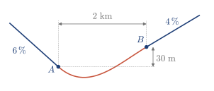
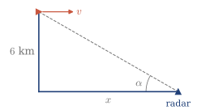
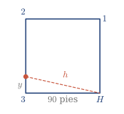

3.9 Ejercicios
Dominio, rango y función compuesta
Ejercicio 3.1
Hallar el dominio y el rango de las siguientes funciones:
- f(x)=1+2\sin x
- f(x)=2+|x+1|
- f(x)=\sqrt{9-x^2}
- f(x)=\dfrac{1}{1+x^2}
(a) D=\mathbb{R}, R=[-1,3]; (b) D=\mathbb{R}, R=[2,\infty); (c) D=[-3,3], R=[0,3]; (d) D=\mathbb{R}, R=(0,1].
Ejercicio 3.2
Hallar g\circ f y f\circ g con sus dominios:
- f(x)=x+1, g(x)=\sqrt x
- f(x)=x-4, g(x)=\ln x
(a) (g\circ f)(x)=\sqrt{x+1}, D=[-1,\infty); (f\circ g)(x)=\sqrt x+1, D=[0,\infty). (b) (g\circ f)(x)=\ln(x-4), D=(4,\infty); (f\circ g)(x)=\ln x-4, D=(0,\infty).
Ejercicio 3.3
Sean f(x)=\ln x y g(x)=e^x. Hallar g\circ f y f\circ g con sus dominios. ¿Son la misma función?
Las dos fórmulas se reducen a x, pero g\circ f tiene dominio (0,\infty) y f\circ g tiene dominio \mathbb{R}. No son la misma función.
Función inversa
Ejercicio 3.4
Hallar el dominio y el rango de:
- f(x)=-\pi+\arccos x
- f(x)=\arcsin(x-1)
(a) D=[-1,1], R=[-\pi,0]; (b) D=[0,2], R=\left[-\frac\pi2,\frac\pi2\right].
Ejercicio 3.5
Hallar la inversa de cada función en el dominio indicado, y el dominio de la inversa:
- f(x)=1+e^{2x}, D=\mathbb{R}
- f(x)=x^2-1, D=(-\infty,0]
- f(x)=\ln(x+3), D=(-3,\infty)
- f(x)=\cos(x-1), D=[1,\pi+1]
- f(x)=\sinh x, D=\mathbb{R}
(a) f^{-1}(x)=\frac12\ln(x-1), D=(1,\infty); (b) f^{-1}(x)=-\sqrt{1+x}, D=[-1,\infty); (c) f^{-1}(x)=e^x-3, D=\mathbb{R}; (d) f^{-1}(x)=1+\arccos x, D=[-1,1]; (e) f^{-1}(x)=\ln\left(x+\sqrt{x^2+1}\right), D=\mathbb{R}.
Ejercicio 3.6
Hallar la inversa de y(x)=\dfrac{e^{2x}+e^{-2x}}{2}, definida en D=[0,\infty), y su dominio. (2015/16 3E)
x(y)=\frac12\ln\left(y+\sqrt{y^2-1}\right), con dominio [1,\infty) y rango [0,\infty).
Ejercicio 3.7
Razonar si cada función es inyectiva en el dominio indicado:
- f(x)=x^3 en \mathbb{R}
- f(x)=\sin x en [0,\pi]
(a) Sí: x_1^3=x_2^3 implica x_1=x_2. (b) No: \sin\frac\pi4=\sin\frac{3\pi}4.
Límite de una función
Ejercicio 3.8
Calcular \lim\limits_{x\to1}\dfrac{x^2-1}{x-1} usando la definición.
Si x_n\to1 con x_n\neq1, f(x_n)=x_n+1\to2. El límite es 2.
Ejercicio 3.9
Probar con dos sucesiones que \lim\limits_{x\to0}\sin\dfrac1x no existe.
Con x_n=\frac{1}{n\pi}, f(x_n)=0\to0. Con y_n=\frac{1}{\pi/2+2n\pi}, f(y_n)=1\to1. Los límites son distintos.
Ejercicio 3.10
Estudiar el límite en x=1 de f(x)=\begin{cases}x^2,&x<1\\3-x,&x\geq1.\end{cases}
\lim\limits_{x\to1^-}f(x)=1 y \lim\limits_{x\to1^+}f(x)=2: el límite no existe.
Continuidad
Ejercicio 3.11
Hallar k\in\mathbb{R} para que sea continua f(x)=\begin{cases}x^2,&x<1\\kx-3,&x\geq1.\end{cases}
k=4.
Ejercicio 3.12
¿En qué puntos son continuas estas funciones?
- f(x)=\dfrac{1}{x^2-1}
- f(x)=\dfrac{\ln x}{x-2}
(a) En \mathbb{R}\setminus\{-1,1\}; (b) en (0,2)\cup(2,\infty).
Ejercicio 3.13
Si f es continua en x=a y g no lo es, ¿puede ser continua f+g en x=a? Razonar la respuesta.
No: si lo fuera, g=(f+g)-f sería continua, por ser resta de continuas.
Ejercicio 3.14
Demostrar que la ecuación \cos x=x tiene una solución en (0,1).
g(x)=\cos x-x es continua, con g(0)=1>0 y g(1)=\cos1-1<0. Se aplica Bolzano.
Ejercicio 3.15
Demostrar que f(x)=x^3-3x+1 tiene tres raíces reales, y localizarlas entre enteros consecutivos.
f(-2)=-1, f(-1)=3, f(0)=1, f(1)=-1 y f(2)=3. Por Bolzano, hay raíces en (-2,-1), (0,1) y (1,2). Un polinomio de grado 3 no tiene más.
Ejercicio 3.16
El porcentaje p de residuos que recicla cada año una ciudad y su coste C, en millones, cumplen p(C)=\dfrac{100C}{C+500}. (2012/13 5E)
- Dibujar p(C) y C(p).
- Estudiar el comportamiento de C cuando p se acerca a 100.
- ¿Se puede reciclar cualquier porcentaje?
- La Administración quiere reciclar cada año entre el 20,% y el 30,%. Demostrar que es posible.
(a) C(p)=\frac{500p}{100-p}. (b) C\to\infty. (c) No: solo 0\leq p<100. (d) C(20)=125 y C(30)\approx214.3. Como p(C) es continua, por el teorema de Darboux toma en [125,\,214.3] todos los valores de [20,30].
Ejercicio 3.17
La función f(x)=1/x cumple f(-1)<0 y f(1)>0, pero no se anula en [-1,1]. ¿Contradice esto el teorema de Bolzano?
No: f no es continua en [-1,1], porque no está definida en x=0.
Derivada
Ejercicio 3.18
Demostrar con la definición que la derivada de f(x)=x es 1. (2016/17 3E)
f'(x)=\lim\limits_{h\to0}\dfrac{x+h-x}{h}=1.
Ejercicio 3.19
Hallar con la definición la derivada de f(x)=1/x en x=a\neq0.
f'(a)=\lim\limits_{h\to0}\dfrac{1}{h}\left(\dfrac{1}{a+h}-\dfrac1a\right)=\lim\limits_{h\to0}\dfrac{-1}{a(a+h)}=-\dfrac{1}{a^2}.
Ejercicio 3.20
Hallar las rectas tangentes a y=x^2 que pasan por el punto (1,-3).
En x=a, la tangente es y=a^2+2a(x-a). Al imponer el punto, a^2-2a-3=0, con a=3 o a=-1. Las tangentes son y=6x-9 e y=-2x-1.
Ejercicio 3.21
Sea f(x)=\begin{cases}0,&x\leq-1\\ax^3+bx,&-1<x<2\\11x-16,&x\geq2.\end{cases}
- Hallar a y b para que f sea continua.
- Estudiar la derivabilidad de f.
(a) a=1, b=-1. (b) No es derivable en x=-1: f'(-1^-)=0 y f'(-1^+)=2. Es derivable en x=2: las dos derivadas laterales valen 11.
Ejercicio 3.22
Hallar a, b, c y d para que sea continua y derivable en \mathbb{R} la función f(x)=\begin{cases}\dfrac{x^2-4}{x-2},&x<2\\[2mm]ax^2-bx+c,&2\leq x<3\\dx-a+b,&x\geq3.\end{cases} (2020/21 1E AT)
a=\frac38, b=\frac12, c=\frac72, d=\frac74.
Ejercicio 3.23
Para construir una autopista hay que salvar un valle, cuyas laderas son tramos rectos con pendientes del 6,% y del 4,% (ver la figura). Hallar la ecuación del tramo central, entre A y B, si es un polinomio de grado 3. (2013/14 2E)

Con el origen en A: y(0)=0, y'(0)=-0.06, y(2)=0.03 e y'(2)=0.04. Resulta y=-0.0125x^3+0.0625x^2-0.06x.
Ejercicio 3.24
Aproximar con la aproximación lineal:
- e^{0.2}
- \ln0.9
- \sin58^\circ
(a) 1.2; (b) -0.1; (c) \frac{\sqrt3}{2}-\frac{\pi}{180}\approx0.8486, con a=60^\circ y h=-\frac{\pi}{90} radianes.
Ejercicio 3.25
Demostrar que si f es derivable en x=a, es continua en x=a. Indicación: escribir f(a+h)-f(a)=\dfrac{f(a+h)-f(a)}{h}\,h.
Al tomar el límite con h\to0, el segundo miembro tiende a f'(a)\cdot0=0. Por tanto, \lim\limits_{h\to0}f(a+h)=f(a).
Regla de la cadena y derivada de la inversa
Ejercicio 3.26
Derivar:
- \sqrt{1+x^2}
- e^{-x^2}
- \ln(\sin x)
- \sin^3x
(a) \dfrac{x}{\sqrt{1+x^2}}; (b) -2xe^{-x^2}; (c) \dfrac{\cos x}{\sin x}; (d) 3\sin^2x\cos x.
Ejercicio 3.27
Sea f(x)=\begin{cases}g(x),&x<0\\e^{\sin x},&0\leq x\leq2\pi\\g(x),&x>2\pi,\end{cases} donde g es un polinomio de grado 2 o 3. (2022/23 2E)
- ¿Qué grado tiene que tener g para que f sea continua y derivable en \mathbb{R}? Razonar la respuesta.
- Hallar los coeficientes de g.
(a) Hay cuatro condiciones, g(0)=1, g'(0)=1, g(2\pi)=1 y g'(2\pi)=1, así que hacen falta cuatro coeficientes: grado 3. (b) g(x)=\dfrac{x^3}{2\pi^2}-\dfrac{3x^2}{2\pi}+x+1.
Ejercicio 3.28
Para cada función del Ejercicio 3.5 y para \cosh x (Ejemplo 3.8), hallar \dfrac{dx}{dy} en función de x y en función de y.
(a) \frac12e^{-2x}=\frac{1}{2(y-1)}; (b) \frac{1}{2x}=-\frac{1}{2\sqrt{1+y}}; (c) x+3=e^y; (d) \frac{1}{\sin(1-x)}=-\frac{1}{\sqrt{1-y^2}}; (e) \frac{1}{\cosh x}=\frac{1}{\sqrt{y^2+1}}; \cosh x: \frac{1}{\sinh x}=\frac{1}{\sqrt{y^2-1}}.
Ejercicio 3.29
Para la función del Ejercicio 3.6, hallar \dfrac{dx}{dy} en función de x y en función de y. (2015/16 3E)
\dfrac{dx}{dy}=\dfrac{1}{e^{2x}-e^{-2x}}=\dfrac{1}{2\sqrt{y^2-1}}.
Ejercicio 3.30
Obtener las derivadas de \arccos x y \arctan x con la derivada de la inversa.
Si x=\cos y, con y\in[0,\pi], \frac{dy}{dx}=-\frac{1}{\sin y}=-\frac{1}{\sqrt{1-x^2}}. Si x=\tan y, \frac{dy}{dx}=\frac{1}{1+\tan^2y}=\frac{1}{1+x^2}.
Ejercicio 3.31
Usar las fórmulas de las segundas derivadas para calcular:
- \left(e^{x^2}\right)''
- \left(\arcsin x\right)''
(a) (4x^2+2)e^{x^2}; (b) \dfrac{x}{(1-x^2)^{3/2}}.
Derivación implícita y paramétrica
Ejercicio 3.32
Hallar y', suponiendo que y es función de x:
- y=e^{xy} (2019/20 3E AT)
- 10x^4-18xy^2+10y^3=48
- x^3+y^3=4
- y=\sin(3x+4y)
- x=3-\sqrt{x^2+y^2}
(a) y'=\frac{y^2}{1-xy}; (b) y'=\frac{9y^2-20x^3}{3(5y^2-6xy)}; (c) y'=-\frac{x^2}{y^2}; (d) y'=\frac{3\cos(3x+4y)}{1-4\cos(3x+4y)}; (e) y'=-\frac{\sqrt{x^2+y^2}+x}{y}.
Ejercicio 3.33
Hallar la recta tangente a la curva y^3+x^3-3xy=0 en el punto \left(\frac32,\frac32\right). (2020/21 5.1E)
y'=\frac{3y-3x^2}{3y^2-3x}=-1 en el punto. La tangente es y=-x+3.
Ejercicio 3.34
Hallar la recta tangente a la curva (x^2+y^2)^3=8x^2y^2 en el punto (-1,1).
Derivando y sustituyendo el punto, y'=1. La tangente es y=x+2.
Ejercicio 3.35
Hallar \dfrac{dy}{dx} en función de t:
- x=t^3-t, y=4-t^2
- x=2t^3+1, y=t^2\cos t
- x=3\cos t, y=2\sin t
(a) \frac{-2t}{3t^2-1}; (b) \frac{2\cos t-t\sin t}{6t}; (c) -\frac{2\cos t}{3\sin t}.
Razones de cambio
Ejercicio 3.36
Un avión vuela a velocidad constante y a 6 km de altura hacia una estación de radar situada en el suelo. En un momento dado, el radar lo ve con un ángulo de 30^\circ, que crece a 0.5^\circ por segundo (ver la figura). Calcular la velocidad del avión.

x=\dfrac{6}{\tan\alpha}, así que x'=-\dfrac{6}{\sin^2\alpha}\,\alpha'=-24\alpha'. Con \alpha'=0.5^\circ/\text{s}=\frac{\pi}{360} rad/s, resulta x'=-\frac{\pi}{15} km/s. El signo indica que x disminuye: v=\frac{\pi}{15}\approx0.21 km/s.
Ejercicio 3.37
Un campo de béisbol tiene un cuadrado interior de 90 pies de lado, con home H en un vértice y las bases 1, 2 y 3 en los siguientes. Un jugador corre de la segunda base a la tercera, a 30 pies/s cuando está a 20 pies de la tercera (ver la figura). ¿A qué velocidad cambia en ese instante su distancia a home? (2025/26 2E)

h^2=y^2+90^2, con y=20 e y'=-30. Entonces h'=\dfrac{y\,y'}{h}=-\dfrac{60}{\sqrt{85}}\approx-6.51 pies/s: la distancia disminuye.